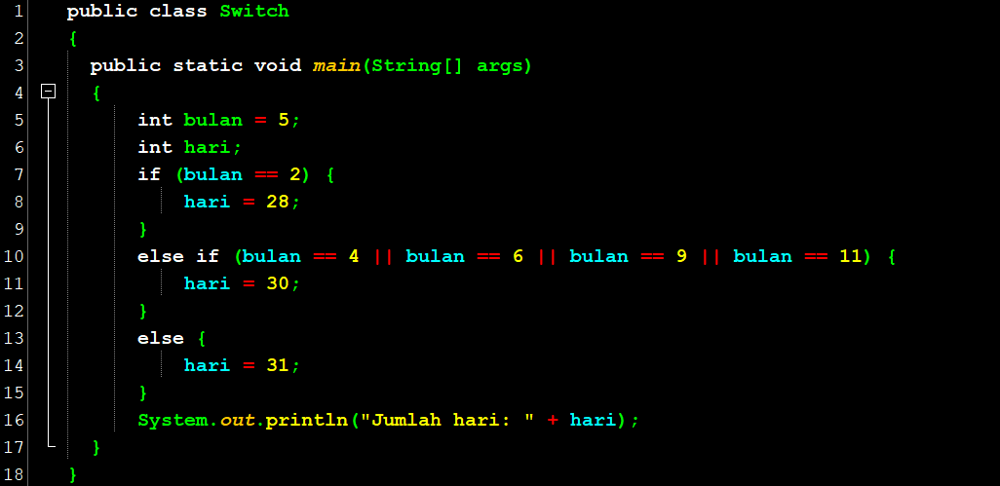
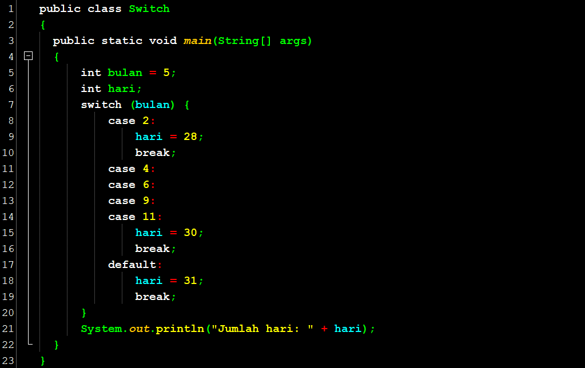
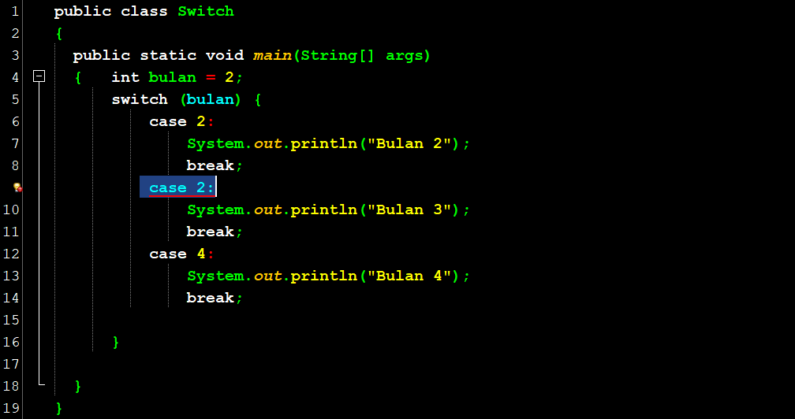
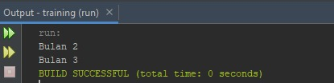
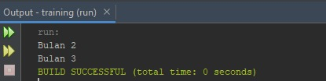

Halo teman-teman,
Setelah membahas statement if-then- else di tutorial sebelumnya, pada kesempatan ini kita akan membahas kasus khusus dari if-then-else yang bisa kita ubah dengan menggunakan statement Switch.
Perhatikan code untuk menentukan jumlah hari dalam suatu bulan berikut:
Pada contoh di atas, di dalam if-then-else tersebut kita melakukan pengecekan terhadap nilai bulan dan selalu membandingkan nilai bulan dengan tanda == (equals) terhadap suatu bilangan. Struktur seperti ini bisa kita ubah menggunakan statement switch.
Struktur Statement Switch
Pada contoh di atas, kita melakukan pengecekan terhadap nilai bulan dan selalu membandingkan nilai bulan dengan case-case tertentu menggunakan switch.
Penjelasan :
Perhatikan code di baris ke-7 yaitu switch (bulan). Code ini berarti kita akan membandingkan nilai dari variable bulan. Di baris ke-8, tertulis case 2: yang berarti jika bulan = 2, maka kita eksekusi code di bawahnya (baris ke-9) dan seterusnya hingga kita menemukan statement break. Statement break ini akan secara otomatis mengakhiri switch ini dan akan langsung menuju ke kurung kurawal tutup di baris ke-20.
Baris ke-11 hingga ke-14 dapat dibaca “jika bulan sama dengan 4 atau 6 atau 9 atau 11”, maka eksekusi baris ke-15 hingga menemukan statement break. Default di baris ke-17 berarti jika bukan case di atas, yang berarti bulan tidak sama dengan 2 atau 4 atau 6 atau 9 atau 11, maka kita eksekusi baris ke-18 hingga menemukan statement break. Default ini optional yang berarti tidak wajib ada dan jika ada akan dieksekusi jika case di atasnya tidak ada yang memenuhi.
- Value di case haruslah Unik, yang berarti tidak boleh sama antara satu dengan yang lain.
Contoh Penggunaan yang Salah
Penjelasan :
case 2: di baris ke-9 diberi garis merah yang berarti ada kesalahan (error). Hal ini disebabkan karena case 2 sudah dideklarasikan di baris ke-6. Selain itu, jika kita lupa mengetikkan break di akhir case kita, maka statement di bawahnya akan dieksekusi hingga menemukan break.
Contoh :
 

Penjelasan :
Meskipun bulan bernilai 2, akan tetapi statement di baris ke-10 tetap dieksekusi karena pada saat case 2 memenuhi kondisi dan statement di baris ke-7 dieksekusi, tidak terdapat statement break untuk menghentikan eksekusi tersebut. Sehingga eksekusi baru berhenti saat menemukan break di baris ke-11.